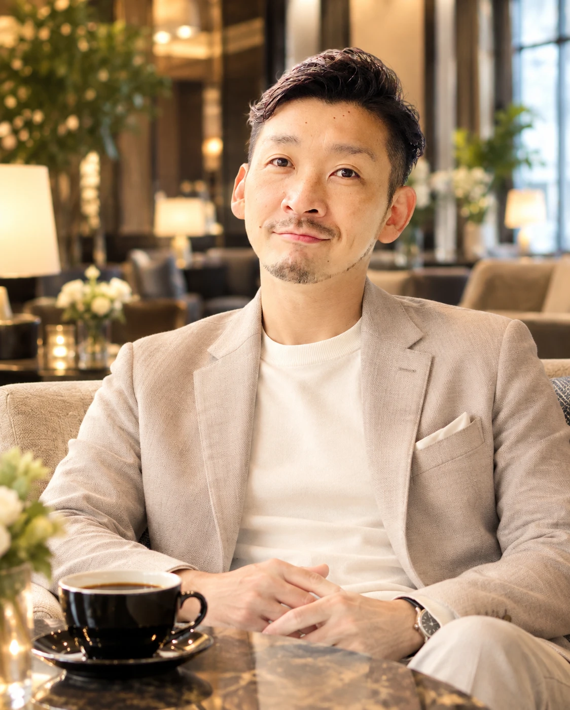

営業人材の育成に悩む経営者・指導者
「育て方を、誰にも教わってこなかった。だから、自分がされたやり方しか知らない。」
結果を出してきた人ほど、部下が同じようにできない理由が分からず、一人で抱え込みます。
目次
人を育てる人も、夢を追う人も、
一人にしない。
大きすぎる目標。
だから、仲間が要る。
ボタンを押すと、新しい一人が輪に加わります。輪の人たちは少しずつ詰めて、場所を空けます。
図のどこを押しても入れます
いま、輪の中に 9 人
10人ごとに、音と言葉が届きます。
なくしたい苦しみ CHAIN
誰かが悪いわけではありません。教える側も、教わる側も、それぞれの場所で一人で苦しんでいます。
営業人材の育成に悩む経営者・指導者
「育て方を、誰にも教わってこなかった。だから、自分がされたやり方しか知らない。」
結果を出してきた人ほど、部下が同じようにできない理由が分からず、一人で抱え込みます。
自信を失った営業マン
「否定され続けるうちに、自分はこの仕事に向いていないと思い込んでしまった。」
伸びる力があったのに、未熟な指導の下で可能性を閉じてしまう人がいます。
レギュラーになれなかった選手
「試合に出られなかった3年間で、自分には価値がないと覚えてしまった。」
ベンチにいた時間が、その人の価値を決めるわけではありません。
初めての子育てに追われる親
「親という仕事は初めて。余裕がないのに、正解は誰も教えてくれない。」
親もまた、支えを必要としている一人です。
偏った教育を受けて育った子ども
「親の不安をそのまま受け取って、自分を信じられないまま大人になった。」
その子が大人になり、今度は誰かを教える側に立ちます。
経営者（指導・教育の立場にあるすべての人）が一人で抱えなくなれば、部下（生徒、子ども）は本来の力を発揮できる。
だから、まず教える側を支えます。自信をなくしてしまった人がいれば、もう一度前を向けるよう、一緒に。
理念 PHILOSOPHY
誰一人として、
置き去りにしない
社会を創る。
教育環境についていけず、「ついていけない」と烙印を押された人たち。その人たちが、自分の存在価値を認めてくれる場所を得られたら、自分にも、他人にも、社会にも良い選択ができるようになります。
人は、役に立つかどうかだけで見られることを望んでいません。価値観や想いを分かち合える場所でこそ、その人の「あるべき姿」が引き出され、幸せが大きくなります。
完璧な人も、完璧な社会もありません。だからこそ、より良い社会へ向かうために、誰にでも光が当たるべきだと考えています。
目指すのは、こんな社会。
実現の方法 HOW
人は、出会う人によって変わります。だから、次の3つを大切にします。
01
遠くから眺める傍観者としてではなく、話を聞いてもらえる距離で対話する。そうすれば、「あの人は特別だから」が「自分にもできる」に変わります。
02
好きなことがあり、共感してくれる人や理解者に会える場所。人と比べて、自分を卑下しなくていい場所です。
03
担任は一人、親も一人。それでは偏りが生まれるのも自然なことです。たくさんの先生、たくさんの大人に関われる仕組みをつくります。
いま
「あの人は特別。自分には無理だ。」
目指す姿
「自分にも、できる。」
これから ROADMAP
採用コストの削減も、売上の拡大も、目的ではなく手段です。部下が育ち、会社が伸びる。夢を叶えた人が、次の誰かを支える。その積み重ねが、誰一人として置き去りにしない社会につながっています。
経営者と、起業する人を支える
営業人材の育成に悩む経営者と、夢を叶えたい個人事業主に、信頼関係づくりと営業の力を届けます。
相談し合える場をつくる
育成に悩む経営者・リーダーが、一人で抱えずに相談し合える場をつくります。
教育の現場へ広げる
親・先生・スポーツ指導者へ。理想の指導者に会える場と、みんなで育てる仕組みを届けます。
誰一人として、置き去りにしない
すべての人のそばに理解者がいて、居場所がある社会。
代表メッセージ FOUNDER

小宮 直樹こみや なおき
HITORIMO 代表
教育の環境の中で、自分の存在価値を認めてもらえないまま過ごした時間があります。その経験が、いまの私の原点です。
大人になり、トップ営業として結果を出しました。ところが、自分のやり方をそのまま部下に求めたとき、部下は育たず、離れていきました。そこで学んだのが、信頼には届く順番があるということです。
周りを見渡すと、同じように苦しむ人がたくさんいました。未熟な指導の下で自信を失った営業マン。レギュラーになれず、自分を責め続けた選手。余裕をなくした親と、その偏った教育を受けて育った子どもたち。
同じ苦しみを味わう人を、これ以上増やしたくない。目指すのは「誰一人として、置き去りにしない社会」です。一人では決して届かない、大きすぎる目標かもしれません。だからこそ、仲間が必要です。
そして私は、いま自分にできることから始めます。育成に一人で悩む経営者が変われば、部下は本来の力を発揮できる。私にできる唯一の強みは、営業の現場で培った「信頼関係を築く力」です。この力で経営者を支え、力を発揮できる人を一人でも増やしたい。夢を持って起業する人の力にもなりたい。その一つひとつが、目指す社会につながっていると信じています。
同じ想いを持つあなたの力を、貸してください。
サービス一覧 SERVICES
気になるサービスを押すと、詳しい内容が開きます。
内容
関わり方（2つから選べます）
料金：お問い合わせください
どちらのプランが合うかは、初回相談でご提案します。
内容
料金：お問い合わせください
このサービスについて相談するなぜ、代行なのか
お客様は、会社から直接聞かれると、なかなか本音を言えません。関係を気にして、不満を飲み込んでしまうからです。利害関係のない第三者だからこそ、言いにくい本音まで聞き出せます。
アンケートで見つけること
得られること
泣き寝入りのお客様を、置き去りにしない。声を上げられずに離れていったお客様の不満を拾い、企業との関係をもう一度つなぎ直します。リピートされる会社は、ターゲットにぴたりと合い、社会に必要とされている証拠です。それが、より良い社会への貢献につながります。
料金：お問い合わせください
このサービスについて相談する内容
料金：お問い合わせください
このサービスについて相談する内容
得られること
関わり方：1対1・グループ・1回のセミナーから選べます。
料金：お問い合わせください
こんなことができます
AIを使える人と、使えない人。その差で、誰も置き去りにしない。AIは、一部の人だけの道具ではありません。誰でも使える形にして、届けます。
料金：お問い合わせください
このサービスについて相談する人が育つと、会社が変わる。
成果は、組織の状況によって異なります。
これから（準備中）
実績 RECORD
HITORIMOは立ち上げたばかりです。これから生まれる変化を、ここに記録していきます。
導入企業の声
準備中部下の変化
準備中活動の記録
準備中お問い合わせ CONTACT
どのご相談も、お話を伺うところから始めます。
仲間の募集は、ただいま準備中です。準備が整いしだい、このページでお知らせします。先にお話を聞いてみたい方は、お問い合わせページからお気軽にご連絡ください。
FAQ QUESTIONS
状況や内容によって変わるため、お問い合わせください。初回相談は無料です。
集中プランは、期間を決めて、課題に集中して取り組みます。伴走プランは、顧問として継続的に関わり、組織の変化に合わせて支えます。どちらが合うかは、初回の無料相談でご提案します。
対象のお客様と聞きたいことを一緒に決めたうえで、御社に代わってアンケートを行い、結果をまとめてお伝えします。詳しい進め方は、初回相談でご提案します。
営業に関わる人材の育成であれば、業種を問わずご相談ください。
組織の状況によって変わります。初回の無料相談でお話を伺い、期間と進め方をご提案します。
経営者ご自身との対話を重ね、想いを言葉にするところから始め、理念・ビジョン・ミッションの形に整えます。そのうえで、社内に浸透させる仕組みまで一緒につくります。
はい。想いと強みを整理し、商品のかたちにするところから一緒に考えます。
大丈夫です。今の状況に合わせて、無理のない進め方を一緒に考えます。
内容によって変わるため、お問い合わせください。初回相談は無料です。
いまは準備中です。「ついていけない」と感じている子どもが、自分の存在価値を認めてもらえる居場所と、その子に合った育成を届けていきます。親の方向けのプログラムも用意していきます。
はい。HITORIMOは学校と競うものではなく、学校と並ぶ新しい選択肢として存在します。
変化の早さは、一人ひとり違います。まずは状況を伺い、その子に合ったペースを一緒に考えます。
学校に代わるものではありません。学校についていけないと感じた子どもや、その周りの大人のための、新しい選択肢です。
教師向けのプログラムを、これから用意していきます。子育ての経験がない先生も、一緒に学べる場にします。
「誰一人として、置き去りにしない社会を創る」ことを目指す活動です。いまは、営業人材の育成に悩む経営者と、夢を叶えたい個人事業主を支えるところから始めています。
いまは準備中です。育成に悩む経営者・リーダーが、一人で抱えずに相談し合える場を、これからつくっていきます。
ご相談の内容を、ご本人の許可なく外に出すことはありません。